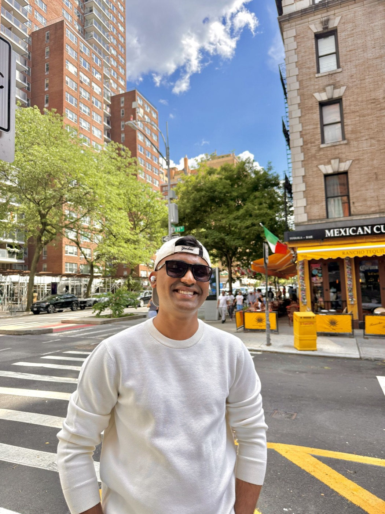

hi, i'm krrish.

i've played tennis for most of my life. it's been the best part of my week for 11 years. i just love the game.
the best part was never the winning. it was the people. some of my closest friends are people i met across a net, and you learn more about someone in one set than in a month of networking events.
before college i cold-called a lot of people just to ask what they actually did all day. most were kind enough to talk to a random kid, and a few of those calls changed where my life went. i still think about how many good conversations never happen because two people never end up in the same place.
now i'm a student in san francisco and i work as a quant investment intern. i'm a little obsessed with tennis (i built a tennis prediction market, and i was even offered $1m to buy the whole thing), and i keep meeting interesting people who'd get along but have never met.
so i'm booking some courts and inviting them. that's really all this is.
it's for fun. it's free. i'm not trying to build anything big. i just want a good morning of tennis with interesting people, every week.
— Krrish Ghindani
if you want to give something back.
none of this is required. showing up is the only thing i ask. but some members want to do more, and these are the ways that help most.
host a week.
got access to a private court or a club? we'll bring the morning to you.
sponsor.
cover courts, balls, or a coach so it stays free for everyone.
bring someone.
know someone who should be here? send them to the form and put your name in "referred by."
teach something.
run a clinic on court, or lead a dinner on something you know better than anyone.